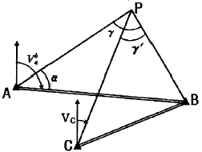
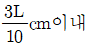
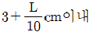
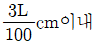
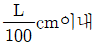
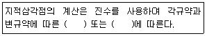
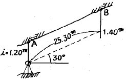
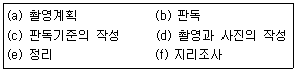
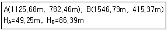
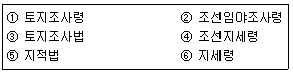

지적기사 (2010-07-25 기출문제)
1과목: 지적측량
1. 평판측량방법에 따라 조준의를 사용하여 경사거리를 측정한 결과가 아래와 같은 경우 수평거리로 옳은 것은? (단, 경사거리는 82.1m, 경사분획은 6.5이다.)
- 79.9m
- 80.9m
- 81.9m
- 82.9
(정답률: 알수없음)

2. 각의 측량에 있어 A는 1회 관측으로 60°20‘38“, B는 4회 관측으로 60°20’21”, C는 9회 관측으로 60°20‘30“의 측정결과를 얻었을 때 최확값으로 옳은 것은? (단, 경중률이 일정한 경우이다.)
- 60°20‘20“
- 60°20‘24“
- 60°20‘28“
- 60°20‘32“
(정답률: 알수없음)
3. 아래 그림과 같은 교회망에서 Vab=125°, 관측내각이 α=60°, γ=75°, γ‘=30°일 때 점 C에서 점 P에 대한 방위각(Vc) 크기는 얼마인가?

- 15°
- 20°
- 25°
- 30°
(정답률: 알수없음)
4. 다음 중 지적삼각보조점성과표에 기록ㆍ관리하여야 하는 사항에 해당하지 않는 것은?
- 시준점의 명칭
- 도면번호
- 소재지와 측량연월일
- 도선등급 및 도선명
(정답률: 알수없음)
5. 다음 중 지번 및 지목의 제도에 대한 설명으로 옳지 않은 것은?
- 지번 및 지목은 경계에 닿지 않도록 필지의 중앙에 제도한다.
- 지번 및 지목을 제도하는 때에는 지번 다음에 지목을 제도한다.
- 지번 및 지목을 제도하는 때에는 고딕체로 0.5~1mm의 크기로 제도한다.
- 지번 및 지목을 제도하는 때에 지번의 글자 간격은 글자크기의 1/4정도 띄워서 제도한다.
(정답률: 알수없음)
6. 경위의측량방법으로 세부측량을 하였을 때 측량대상 토지의 경계점간 실측거리와 경계점의 좌표에 의하여 계산한 거리의 교차는 최대 얼마 이내이어야 하는가? (단, L은 실측거리로서 m단위로 표시한 수치를 말한다.)




(정답률: 알수없음)
7. 다음 중 분할 후의 각 필지의 면적의 합계와 분할 전 면적과의 오차의 허용범위를 구하는 식으로 옳은 것은? (단, A:오차허용면적, M:축척분모, F:원면적)
- A=0.00232ㆍM√F
- A=0.00262ㆍM√F
- A=0.0023ㆍM√F
- A=0.0026ㆍM√F
(정답률: 알수없음)
8. 다음 중 도선법에 따른 지적도근점의 각도 관측에서 방위각법에 따른 1등도선의 폐색오차는 최대 얼마 이내로 하여야 하는가? (단, n은 폐색변을 포함한 변의 수를 말한다.)
- ±√n분 이내
- ±1.5√n분 이내
- ±20√n분 이내
- ±30√n분 이내
(정답률: 알수없음)
9. 배각법에 의한 지적도근점측량을 한 결과, 출발기지 방위각이 128°08‘33“, 측정된 내각의 합이 1909°38’48”, 도착기지방위각이 57°47‘30“일 경우 각오차(측각 오차)는? (단, 폐색변을 포함한 변의 수는 12개이다.)
- +9초
- +19초
- -9초
- -19초
(정답률: 알수없음)
10. 다음 중 평판측량방법에 따른 세부측량을 교회법으로 하는 경우의 기준 및 방법에 대한 설명으로 옳지 않은 것은?
- 전방교회법 또는 측방교회법에 따른다.
- 방향각의 교각은 30° 이상 150° 이하로 한다.
- 3방향 이상의 교회에 따른다.
- 측량결과 시오삼각형이 생긴 경우 내접원의 지름이 2mm이하일 때에는 그 중심을 점의 위치로 한다.
(정답률: 알수없음)
11. 다음 중 지적삼각점의 계산과 관련한 아래의 설명에서 ()에 들어갈 수 있는 것으로 옳은 것은?

- 망평균계산법
- 다각망도선법
- 3방향교회법
- 결합도선법
(정답률: 알수없음)
12. 전파기측량방법에 따라 다각망도선법으로 지적삼각보조점 측량을 하는 때에 1도선의 점의 수는 기지점과 교점을 포함하여 최대 얼마 이하로 하여야 하는가?
- 5점
- 10점
- 15점
- 20점
(정답률: 알수없음)
13. 다음 중 경계의 제도방법 기준에 대한 설명으로 옳은 것은?
- 경계는 0.1mm 폭으로 제도한다.
- 1필지의 경계가 도곽선에 걸쳐 등록되어 있는 경우에는 도곽선 밖의 여백에 경계를 제도할 수 없다.
- 경계점좌표등록부시행지역의 도면에 등록하는 경계점간 거리는 붉은색, 1.5mm 크기의 아라비아 숫자로 제도한다.
- 지적측량기준점 등이 매설된 토지를 분할하는 경우 그 토지가 작아서 제도하기가 곤란한 경우에는 그 도면의 여백에 그 축척의 15배로 확대하여 제도할 수 있다.
(정답률: 알수없음)
14. 다음 중 경위의측량방법에 따른 지적삼각점의 관측에서 수평각의 측각공차 기준이 옳지 않은 것은?
- 1방향각:±30“ 이내
- 기지각과의 차:±30“ 이내
- 1측회의 폐색:±30“ 이내
- 삼각형 내각관측의 합과 180°와의 차:±30“ 이내
(정답률: 알수없음)
15. 다음 중 경계점좌표등록부를 갖춰 두는 지역의 측량방법 및 기준에 대한 설명으로 옳지 않은 것은?
- 각 필지의 경계점을 측정할 때에는 도선법, 방사법 또는 교회법에 따라 좌표를 산출하여야 한다.
- 필지의 경계점의 지형ㆍ지물에 가로막혀 경위의를 사용할 수 없는 경우에는 간접적인 방법으로 경계점의 좌표를 산출할 수 있다.
- 기존의 경계점좌표등록부를 갖춰 두는 지역의 경계점에 접속하여 경위의측량방법 등으로 지적확정측량을 하는 경우 동일한 경계점의 측량성과의 차이는 0.10m 이내 이어야 한다.
- 각 필지의 경계점 측점번호는 오른쪽 위에서부터 왼쪽으로 경계를 따라 일련번호를 부여한다.
(정답률: 알수없음)
16. 다음 중 표준줄자와 비교하여 3.4cm가 짧은 50m 줄자를 이용하여 측정한 거리가 355m 경우 실제거리로 옳은 것은?
- 354.76m
- 354.98m
- 355.12m
- 355.24m
(정답률: 알수없음)
17. 다음 중 세부측량을 하는 경우 필지마다 면적을 측정하여야 하는 경우에 해당하지 않는 것은?
- 분할
- 등록전환
- 지목변결
- 지적공부 복구
(정답률: 알수없음)
18. 평판측량방법에 따른 세부측량을 도선법으로 하는 경우 도선의 페색오차를 각 점에 배분하는 방법으로 옳은 것은?
- 변의 길이에 반비례하여 배분한다.
- 변의 순서에 반비례하여 배분한다.
- 변의 길이에 비례하여 배분한다.
- 변의 순서에 비례하여 배분한다.
(정답률: 알수없음)
19. 축척변경 시행지역에서 경위의측량방법에 따른 세부측량을 실시할 경우, 측량결과도는 얼마의 축척으로 작성하여야 하는가? (단, 시ㆍ도지사의 승인을 얻는 경우는 고려하지 않는다.)
- 1/500
- 1/1000
- 1/3000
- 1/6000
(정답률: 알수없음)
20. 다음 중 지적도근점측량의 방법 및 기준에 대한 설명으로 옳지 않은 것은?
- 지적도근점표지의 점간거리는 다각망도선법에 따르는 경우에 평균 0.5km 이상 1km 이하로 한다.
- 전파기측량방법에 따라 다각망도선법으로 하는 경우 3점 이상의 기지점을 포함한 결합다각방식에 따른다.
- 경위의측량방법에 따라 도선법으로 하는 때에 1도선의 점의 수는 40점 이하로 하며 지형상 부득이 한 경우는 50점까지로 할 수 있다.
- 경위의측량방법에 따라 도선법으로 하는 때에 지형상 부득이 한 경우를 제외하고는 결합도선에 의한다.
(정답률: 알수없음)
2과목: 응용측량
21. 축척 1:500 지형도를 기초로 하여 같은 크기의 축척 1:2500의 지형도를 작성하려 한다. 1:2500 지형도의 한 도면을 작성하기 위해서 필요한 1:500 지형도의 매수는?
- 5매
- 10매
- 15매
- 25매
(정답률: 알수없음)
22. 간접수준측량에서 지구의 평균반경을 6370km로 하고, 수평거리가 2km일 때 지구곡률오차는?
- 0.314m
- 0.491m
- 0.981m
- 1.962m
(정답률: 알수없음)
23. 단곡선 설치에 있어서 접선과 현이 이루는 각을 이용하여 곡선을 설치하는 방법으로 가장 널리 사용되는 방법은?
- 편각설치법
- 지거설치법
- 중앙종거법
- 현편거법
(정답률: 알수없음)
24. 도로의 시작점부터 1234.30m 지점에 교점(I.P)이 있고 반경(R)은 150m, 교각(I)은 60°일 경우 접선장(T.L)과 곡선장(C.L)은?
- T.L=157.08m, C.L=86.60m
- T.L=157.08m, C.L=157.08m
- T.L=86.60m, C.L=157.08m
- T.L=86.60m, C.L=86.60m
(정답률: 알수없음)
25. 터널내에서 천장에 고정점 A, B를 관측한 결과가 그림과 같을 때 두 지점간의 고저차는?

- 12.65m
- 12.85m
- 22.11m
- 25.10m
(정답률: 알수없음)
26. 곡률반경이 현의 길이에 반비례하는 곡선으로 시가지 철도 및 지하철 등에 주로 사용되는 완화곡선은?
- 3차포물선
- 반파장 체감곡선
- 렘니스케이트
- 클로소이드
(정답률: 알수없음)
27. 클로소이드 곡선에 대한 설명으로 옳지 않은 것은?
- 클로소이드형식에는 기본형, S형, 나선형, 복합형 등이 있다.
- 모든 클로소이드는 닮은 꼴이다.
- 단위 클로소이드의 모든 요소들은 단위가 없다.
- 매개변수(A)에 의해 클로소이드의 크기가 정해진다.
(정답률: 알수없음)
28. 지성선 중에서 빗물이 이것을 따라 좌우로 흐르게 되는 선으로 지표면이 높은 곳의 꼭대기 점을 연결한 선은?
- 합수선(계곡선)
- 분수선(능선)
- 경사변환선
- 최대경사선
(정답률: 알수없음)
29. 카메라의 초점거리가 153mm, 촬영 경사각이 3.6°로 평지를 촬영한 항공사진이 있다. 이 사진의 등각점은 주점으로부터 최대경사선상 몇 mm인 곳에 있는가?
- 10.7m
- 5.3m
- 4.8m
- 3.6m
(정답률: 알수없음)
30. 항공사진 판독의 기본요소로 볼 수 없는 것은?
- 형상, 음영
- 날짜, 촬영고도
- 질감, 모양
- 색조, 크기
(정답률: 알수없음)
31. 사진상의 주점이나 표정점 등 제점의 위치를 인접한 사진상에 옮기는 작업은?
- 점이사
- 표정
- 투영
- 정합
(정답률: 알수없음)
32. 완화곡선의 성질에 대한 설명으로 옳지 않은 것은?
- 완화곡선의 접선은 시점에서 직선에 접한다.
- 곡선반지름름은 완화곡선의 시점에서 원곡선 R로 된다.
- 완화곡선의 접선은 종점에서 원호에 접한다.
- 완화곡선에 연한 곡선반경의 감소율은 캔트의 증가율과 같다.
(정답률: 알수없음)
33. 영상정합의 종류에서 객체의 점, 선, 면의 밝기값 등을 이용하는 정합은?
- 단순 정합
- 관계형 정합
- 형상 기준 정합
- 영역 기준 정합
(정답률: 알수없음)
34. 항공사진측량의 일반적인 작업순서로 맞는 것은?

- a-f-d-c-b-e
- a-d-c-b-f-e
- f-a-d-c-b-e
- f-a-c-b-d-e
(정답률: 알수없음)
35. GPS측량에서 의사거리 결정에 영향을 주는 오차의 원인으로 거리가 먼 것은?
- 대기굴절에 의한 오차
- 위성의 시계오차
- 수신 위치의 기온 변화에 의한 오차
- 위성의 기하학적 위치에 따른 오차
(정답률: 알수없음)
36. 터널측량을 하여 터널 시점(A)와 종점(B)의 좌표가 다음과 같을 때, 터널의 경사도는?

- 3°25‘14“
- 3°48;14“
- 4°08‘14“
- 5°08‘14“
(정답률: 알수없음)
37. 단일 주파수 수신기와 비교할 때, 이중 주파수 수신기의 특징에 대한 설명으로 옳은 것은?
- 전리층지연에 의한 오차를 제거할 수 있다.
- 단일주파수 수신기보다 가격이 싸다.
- 이중주파수 수신기는 C/A코드를 사용하고 단일 주파수 수신기는 P코드를 사용한다.
- 장기선 이상에서는 별로 이점이 없다.
(정답률: 알수없음)
38. 입체시에 의한 과고감에 대한 설명으로 옳은 것은?
- 사진의 초점 거리와 비례한다.
- 사진 촬영의 기선 고도비에 비례한다.
- 입체시할 경우 눈의 위치가 높아짐에 따라 작아진다.
- 렌즈의 피사각의 크기와 반비례한다.
(정답률: 알수없음)
39. 도로의 직선부와 원곡선을 원활하게 연결하기 위하여 설치하는 곡선은?
- 완화곡선
- 증감곡선
- 반향곡선
- 복심곡선
(정답률: 알수없음)
40. 지형도의 지형 표시 방법과 거리가 먼 것은?
- 모형도법
- 영선법
- 채색법
- 점고법
(정답률: 알수없음)
3과목: 토지정보체계론
41. 다음 중 벡터자료의 공간객체로 가장 거리가 먼 것은?
- 점
- 선
- 면
- 격자
(정답률: 알수없음)
42. 다음 중 필지식별번호에 관한 설명으로 옳지 않은 것은?
- 각 필지의 등록사항의 저장과 수정 등을 용이하게 처리할 수 있는 고유번호를 말한다.
- 필지에 관련된 모든 자료의 공통적 색인번호의 역할을 한다.
- 토지관련정보를 등록하고 있는 각종 대장과 파일 간의 정보를 연결하거나 검색하는 기능을 향상시킨다.
- 필지의 등록사항 변경 및 수정에 따라 변화할 수 있도록 가변성이 있어야 한다.
(정답률: 알수없음)
43. 다음 중 한국토지정보시스템(KLIS)에 대한 설명으로 옳은 것은?
- 토지관련 정보를 공동 활용하기 위해 구축한 것이다.
- PBLIS와 LIS를 통합하여 구축한 것이다.
- 지하시설물 관리를 중심으로 구축한 것이다.
- 행정안전부에서 독자적으로 구축한 시스템이다.
(정답률: 알수없음)
44. 다음 중 한국토지정보시스템(KLIS) 개발의 기대 효과로 옳지 않은 것은?
- 토지이동 관련 업무의 분산으로 중복된 업무 탈피
- 지적도 DB의 통합으로 데이터의 무결성 확보
- 지적도 DB활용의 극대화를 통합 대민서비스 개선
- 사용자의 업무 능률 향상
(정답률: 알수없음)
45. 다음 중 토지기록전산화의 목적으로 보기 어려운 것은?
- 지적공부의 전산화 및 전산파일 유지로 지적서고의 체계적 관리 및 확대
- 체계적이고 효율적인 지적사무와 지적행정의 실현
- 최신 자료에 의한 지적통계와 주민정보의 정확성 제고 및 온라인에 의한 신속성 확보
- 전국적인 등본의 열람이 가능하게 하여 민원인의 편의 증진
(정답률: 알수없음)
46. 다음 중 격자구조의 압축 방법에 해당하지 않는 것은?
- Run-length code
- Block code
- Chain code
- Spaghtti code
(정답률: 알수없음)
47. 다음 중 관계형데이터베이스에서 자료의 추출(검색)에 사용되는 표준언어인 비과정 질의어는?
- SQL
- Visual Basic
- Visual C++
- COBOL
(정답률: 알수없음)
48. 다음 중 벡터 자료구조에 비하여 래스터 자료구조가 갖는 장ㆍ단점으로 옳지 않은 것은?
- 자료의 구조가 단순하다.
- 그래픽 자료의 양이 방대하다.
- 복잡한 자료를 최소한의 공간에 저장시킬 수 있다.
- 여러 레이어의 중첩이 용이하다.
(정답률: 알수없음)
49. 다음 중 메타데이터(Metadata)에 대한 설명으로 옳지 않은 것은?
- 메타데이터는 정보의 공유를 극대화하기 위하여 데이터를 목록화한다.
- 메타데이터는 캐드자료를 다른 그래픽 체계로 변환하기 위한 자료파일이다.
- , 메타데이터는 공간참조정보 등 자료에 대한 소개가 포함된다.
- 메타데이터는 일관성을 유지하기 위한 데이터체계를 가지고 있다.
(정답률: 알수없음)
50. 다음 중 공간상에 알려진 표고값이나 속성값을 이용하여 표고나 속성값이 알려지지 않은 지점에 대한 값을 추정하는 공간분석 기법은?
- 중첩분석
- 공간보간
- 공간패턴
- 지형분석
(정답률: 알수없음)
51. 다음의 지적관련 정보 중 도형자료로 활용하기에 가장 적합한 것은?
- 필지의 소재지
- 필지의 지번
- 필지의 경계
- 필지의 개별공시지가
(정답률: 알수없음)
52. 다음 중 데이터베이스의 스키마를 정의하거나 수정하는데 사용하는 데이터 언어는?
- DDL
- DBL
- DML
- DCL
(정답률: 알수없음)
53. 다음 중 임야도의 도형자료를 스캐너로 편집한 자료형태는?
- 래스터데이터
- 속성정보
- 벡터데이터
- 메타데이터
(정답률: 알수없음)
54. 다음 중 PBLIS의 개발 목적으로 옳지 않은 것은?
- 지적 재조사 기반 확보
- 토지관련 서비스 제공
- 행정의 능률성 제고
- LMIS와의 통합
(정답률: 알수없음)
55. 다음 중 속성자료의 입력 방법으로 옳은 것은?
- 스캐너
- 키보드
- 디지타이저
- 마우스
(정답률: 알수없음)
56. 다음 중 경계선의 이중입력으로 서로 다른 폴리곤이 중첩되어 발생하는 불필요한 폴리곤을 무엇이라고 하는가?
- 오버슈트(overshoot)
- 노드중복(overlap)
- 슬리버(sliver)
- 스파이크(spike)
(정답률: 알수없음)
57. 다음 중 필지중심토지정보시스템(PBLIS)의 구성에 해당하지 않는 것은?
- 지적공부관리시스템
- 지적측량성과작성시스템
- 부동산등기관리시스템
- 지적측량시스템
(정답률: 알수없음)
58. 다음 중 객체지향형데이터베이스 관리체계(OODBMS)의 특징에 대한 설명이 옳지 않은 것은?
- 데이터베이스의 관리와 수정이 불편하면 단순한 형태의 데이터만을 저장할 수 있다.
- 관계형데이터모델의 단점을 보완할 수 있는 것으로 등장하였다.
- 객체지향형데이터모델은 CAD와 GIS등의 분야에서 데이터베이스를 구축할 때 사용할 수 있다.
- 특정 객체 간에는 데이터와 그 조작 방법을 공유할 수 있다.
(정답률: 알수없음)
59. 다음 중 특정 공간데이터를 중심으로 일정한 거리 또는 영역을 설정하여 분석하는 공간분석 방법은?
- 버퍼분석
- 네트워크분석
- 중첩분석
- TIN분석
(정답률: 알수없음)
60. 다음 중 사용자권한 등록파일에 등록하는 사용자의 권한에 해당하지 않는 것은?
- 지적전산코드의 입력ㆍ수정 및 삭제
- 토지등급 및 기준수확량등급 변동의 관리
- 토지 관련 정책정보의 관리
- 기업별 토지소유현황의 조회
(정답률: 알수없음)
4과목: 지적학
61. 다음 중 지적공개주의를 실현하는 방법으로 옳지 않은 것은?
- 지적공부에 등록된 사항을 실지에 복원하여 결정된 사항을 실지에 공시하는 방법
- 지적공부의 등록된 사항과 실지사항이 불일치할 경우 실지상황에 따라 변경 등록하는 방법
- 지적공부를 직접 열람하거나 등본에 의하여 외부에서 알 수 있도록 하는 방법
- 등록사항에 대하여 소유자의 신청이 없는 경우 국가가 직권으로 이를 조사 또는 측량하여 결정하는 방법
(정답률: 알수없음)
62. 다음 중 결수연명부에 관한 설명으로 옳은 것은?
- 강계(疆界) 지역을 조사하여 등록한 장부
- 소유권의 분계(分界)를 확정하는 대장
- 지반의 고저가 있는 토지를 정리한 장부
- 지세대장을 겸하여 토지조사준비를 위해 만든 과세부
(정답률: 알수없음)
63. 다음 중 토지의 사정(査定)에 대한 설명으로 옳지 않은 것은?
- 토지소유자와 강계를 확정하는 행정처분이다.
- 토지조사사업 당시 사정권자는 임시토지조사국장이다.
- 대법원에서는 사정된 사항을 무효로 할 수 있었다.
- 사정 사항에 재결을 받은 때의 효력발생은 재결일로 소급하였다.
(정답률: 알수없음)
64. 다음 중 토지등록제도의 유형에 포함되지 않는 것은?
- 날인증서 등록제도
- 적극적 등록제도
- 소극적 등록제도
- 임시 등록제도
(정답률: 알수없음)
65. 다음 중 전지(田地)를 측량할 때 정방형의 눈들을 가진 그물을 사용하여 전지가 그물 속에 들어온 그물눈을 계산하여 면적을 산출하는 방법은?
- 방전제
- 망척제
- 방량제
- 결부제
(정답률: 알수없음)
66. 다음 중 토렌스시스템의 기본이론인 거울이론에 대한 설명으로 옳은 것은?
- 토지권리증서의 등록은 토지의 거래 사실을 완벽하게 반영한다.
- 토지등록부는 매입신청자를 위한 유일한 정보의 기초다.
- 선의의 제3자는 토지의 권리자와 동등한 입장에 놓여야 한다.
- 토지권이에 대한 사실 심사 시 권리의 진실성에 직접 관려하여야 한다.
(정답률: 알수없음)
67. 다음 중 우리나라 토지소유권 보장제도의 변천순서가 바르게 나열된 것은?
- 입안제도-지계제도-증명제도
- 입안제도-증명제도-지계제도
- 증명제도-지계제도-입안제도
- 지계제도-증명제도-입안제도
(정답률: 알수없음)
68. 간주지적도에 등록된 토지는 토지대장과는 별도로 대장을 작성하였다. 다음 중 그 명칭에 해당하지 않는 것은?
- 산토지대장
- 별책토지대장
- 임야토지대장
- 을호토지대장
(정답률: 알수없음)
69. 다음 중 토지거래의 안전을 도모하여 토지의 소유권 보호를 주요 목적으로 하는 것으로 소유지적이라고도 하는 것은?
- 세지적
- 법지적
- 다목적지적
- 토지정보시스템
(정답률: 알수없음)
70. 다음 중 두문자(頭文字) 표기방식의 지목이 아닌 것은?
- 사적지
- 양어장
- 과수원
- 유원지
(정답률: 알수없음)
71. 다음 중 최초로 부동산(토지) 등기부를 작성할 때 등기내용을 확인하는 기초 장부로 사용하였던 것은?
- 토지조사부
- 재결조서
- 토지가옥증명부
- 토지대장
(정답률: 알수없음)
72. 다음 중 조선시대의 경국대전에 명시된 토지등록제도는?
- 공전제도
- 사전제도
- 정전제도
- 양전제도
(정답률: 알수없음)
73. 다음 중 지적이란 2000년 전의 라틴어 카타스트럼(catastrum)에서 그 근원이 유래되었다고 주장한 학자는?
- Blondheim
- Ilmoor D.
- J. McEntyre
- Cledat
(정답률: 알수없음)
74. 다음 중 지적의 형식주의에 대한 설명으로 옳은 것은?
- 국가의 통치권이 미치는 모든 영토를 필지 단위로 구획하여 지적공부에 등록ㆍ공시하여야만 배타적인 소유권이 인정된다.
- 지적공부에 등록된 사항을 일반 국민에게 공개하여 정당하게 이용할 수 있도록 하여야 한다.
- 지적공부에 새로이 등록하거나 변경된 사항은 사실 관계의 부합여부를 심사하여 등록하여야 한다.
- 지적공부에 등록할 사항은 국가의 공권력에 의하여 국가만이 이를 결정할 수 있다.
(정답률: 알수없음)
75. 다음 중 우리나라 지적법의 변천 과정을 옳게 나열한 것은?(오류 신고가 접수된 문제입니다. 반드시 정답과 해설을 확인하시기 바랍니다.)

- ④→②→①→③→⑥→⑤
- ③→⑥→①→④→②→⑤
- ④→②→⑥→③→①→⑤
- ③→①→⑥→②→④→⑤
(정답률: 알수없음)
76. 다음 중 토지조사사업 당시의 재결기관으로 옳은 것은?
- 지방토지조사위원회
- 임시토지조사국장
- 고등토지조사위원회
- 도지사
(정답률: 알수없음)
77. 다음 중 1단지마다 하나의 본번을 부여하고 단지 내 필지마다 부번을 부여하는 방법으로, 토지구획 및 농지개량사업 시행지역 등의 지번설정에 적합한 것은?
- 선별식
- 사행식
- 단지식
- 기우식
(정답률: 알수없음)
78. 다음 중 일반적인 지목의 설정원칙에 해당하지 않는 것은?
- 일시변경불변의 원칙
- 지목변경불변의 원칙
- 사용목적추정의 원칙
- 주지목추종의 원칙
(정답률: 알수없음)
79. 다음 중 대한제국시대에 3편(片)으로 발급한 관계(官界)를 보존하는 기관(사람)에 해당하지 않는 것은?
- 본아문
- 소유자
- 지방관청
- 탁지부
(정답률: 알수없음)
80. 다음 중 수치지적에 비하여 도해지적이 갖는 단점으로 가장 거리가 먼 것은?
- 축척의 크기에 따라 허용오차가 다르다.
- 도면의 신축 방지가 어렵다.
- 비교적 고도의 기술을 요구한다.
- 작업상 인위적인 오차가 발생할 수 있다.
(정답률: 알수없음)
5과목: 지적관계법규
81. 부동산등기법상 토지의 분합, 멸실, 면적의 증감 또는 지목의 변경이 있어 그 등기를 신청하는 경우 등기신청서에 첨부하여야 하는 것은?
- 이해관계인의 승낙서
- 토지대장등본이나 임야대장등본
- 지적도나 임야도
- 멸실 및 증감확인서
(정답률: 알수없음)
82. 국토의 계획 및 이용에 관한 법률에 따른 용도지구에 대한 설명으로 옳지 않은 것은?
- 경관지구:경관을 보호ㆍ형성하기 위하여 필요한 지구
- 미관지구:미관을 유지하기 위하여 필요한 지구
- 발재지구:화재 위험을 예방하기 위하여 필요한 지구
- 고도지구:쾌적한 환경 조성 및 토지의 효율적 이용을 위하여 건축물 높이의 최저한도 또는 최고한도를 규제할 필요가 있는 지구
(정답률: 알수없음)
83. 부동산등기법상 토지 소유권의 등기명의인이 1개월 이내에 그 등기를 신청하여야 하는 경우가 아닌 것은?
- 토지의 분합
- 토지의 지번 변경
- 토지 면적의 증감
- 토지 지목의 변경
(정답률: 알수없음)
84. 도시개발법에 따른 도시개발사업으로 인하여 토지의 이동이 필요한 경우, 토지의 이동은 언제 이루어진 것으로 보는가?
- 토지의 형질변경 등의 공사가 허가된 때
- 토지의 형질변경 등의 공사가 착수된 때
- 토지의 형질변경 등의 공사가 준공된 때
- 토지의 형질변경 등의 공사가 완료된 때
(정답률: 알수없음)
85. 중앙지적위원회의 구성 등에 관한 설명으로 옳은 것은?
- 위원장 및 부위원장을 제외한 위원의 임기는 2년으로 한다.
- 위원장은 국토해양부장관이 임명하거나 위촉한다.
- 위원장 1명과 부위원장 1명을 제외하고, 5명 이상 10명 이하의 위원으로 구성한다.
- 위원장과 부위원장의 임기는 2년으로 한다.
(정답률: 알수없음)
86. 다음 중 등기신청서에 채권액과 채무자를 기재하여야 하는 설정등기는?
- 지상권
- 지역권
- 전세권
- 저당권
(정답률: 알수없음)
87. 국토의 계획 및 이용에 관한 법률에 따른 용도구역에 해당하지 않는 것은?
- 개발제한구역
- 도시자연공원구역
- 개발밀도관리구역
- 시가화조정구역
(정답률: 알수없음)
88. 지적측량업자는 등록사항이 변경된 경우 누구에게 신고하여야 하는가?
- 대한지적공사장
- 행정안전부장관
- 시ㆍ도지사
- 구청장
(정답률: 알수없음)
89. 지적도 및 임야도에 등록하여야 하는 사항에 해당하지 않는 것은?
- 면적
- 경계
- 지목
- 지번
(정답률: 알수없음)
90. 축척변경위원회의 구성에 대한 설명으로 옳지 않은 것은?
- 위원장은 위원 중 3분의 2 이상의 지지를 받은 자를 지적소관청이 임명한다.
- 위원은 해당 축척변경 시행지역의 토지소유자로서 지역사정에 정통한 사람, 지적에 관하여 전문지식을 가진 사람중에서 위촉한다.
- 5명 이상 10명 이하의 위원으로 구성한다.
- 위원의 2분의 1 이상을 토지소유자로 하여야 한다.
(정답률: 알수없음)
91. 토지소유자는 지목변경을 할 토지가 있으면 대통령령으로 정하는 바에 따라 그 사유가 발생한 날부터 몇 일 이내에 지적소관청에 지목변경을 신청하여야 하는가?
- 60일
- 90일
- 120일
- 150일
(정답률: 알수없음)
92. 지적소관청이 등록사항을 정정할 때 토지소유자에 관한 사항은 다음 중 무엇에 의하여 정정하여야 하는가?
- 등기필증
- 지적공부등본
- 법원의 확정판결서
- 지적공부정리결의서
(정답률: 알수없음)
93. 토지의 이동을 조사하는 자가 측량 또는 조사 등에 필요하여 토지등에 출입하거나 일시 사용함으로 인해 손실을 받은 자가 있는 경우의 손실보상에 대한 설명으로 옳지 않은 것은?
- 손실을 받은 자가 있으며 ㄴ그 행위를 한 자는 그 손실을 보상하여야 한다.
- 손실보상에 관하여는 손실을 보상할 자와 손실을 받은 자가 협의하여야 한다.
- 손실을 보상할 자 또는 손실을 받은 자는 손실보상에 관한 협의가 성립되지 아니하는 경우 관할 토지수용위원회에 재결을 신청할 수 있다.
- 재결에 불복하는 자는 재결서 정본을 송달받은 날부터 3월 이내에 중앙토지수용위원회에 이의를 신청할 수 있다.
(정답률: 알수없음)
94. 부동산등기법상 등기할 사항 중 어느 하나에 해당하는 권리의 설정, 이전, 변경 또는 소멸의 청구권을 보전하려는 때에 행하는 등기는?
- 가등기
- 변경등기
- 말소등기
- 예고등기
(정답률: 알수없음)
95. 다음 중 지적공부의 복구 사유에 해당하는 것은?
- 축척변경을 한 때
- 지목변경을 한 때
- 도시계획사업을 완료한 때
- 지적공부의 일부가 훼손된 때
(정답률: 알수없음)
96. 지적측량업의 등록을 할 수 없는 결격사유(기준)로 옳지 않은 것은?
- 금치산자 또는 한정치산자
- 금고 이상의 형의 집행유예를 선고받고 그 집행유예 기간 중에 있는 자
- 지적측량업의 등록이 취소된 후 2년이 지나지 아니한 자
- 금고 이상의 실형을 선고받고 그 집행이 끝나거나(집행이 끝난 것으로 보는 경우를 포함한다.) 집행이 면제된 날부터 3년이 지나지 아니한 자
(정답률: 알수없음)
97. 다음 중 지적 관련 법률에 따른 ‘토지의 표시’에 해당하지 않는 것은?
- 도곽선
- 토지의 소재
- 지번
- 지목
(정답률: 알수없음)
98. 지적소관청이 지적공부의 등록사항에 잘못이 있음을 발견한 때 직권으로 조사ㆍ측량하여 정정할 수 있는 경우로 옳지 않은 것은?
- 토지이동정리결의서의 내용과 다르게 정리된 경우
- 지적공부의 작성 또는 재작성 당시 잘못 정리된 경우
- 지적측량성과와 다르게 정리된 경우
- 임야도에 등록된 필지의 경계가 잘못되어 면적이 감소된 경우
(정답률: 알수없음)
99. 다음 중 지적서고의 연중 평균온도 및 연중 평균습도에 대한 기준이 옳은 것은?
- 섭씨 20±5도, 60±5퍼센트
- 섭씨 25±5도, 65±5퍼센트
- 섭씨 20±5도, 65±5퍼센트
- 섭씨 25±5도, 60±5퍼센트
(정답률: 알수없음)
100. 축척변경에 따른 청산금의 납부고지 등에 관한 설명으로 옳은 것은?
- 지적소관청은 청산금의 결정을 공고한 날부터 1개월 이내에 토지소유자에게 납부고지를 하여야 한다.
- 청산금의 납부고지를 받은 자는 그 고지를 받은 날부터 3개월 이내에 청산금을 지적소관청에 내야 한다.
- 지적소관청은 청산금의 수령통지를 한 날부터 3개월 이내에 토지소유자에게 청산금을 지급하여야 한다.
- 지적소관청은 청산금의 결정을 공고한 날부터 6개월 이내에 청산금에 관한 사무를 종결하여야 한다.
(정답률: 알수없음)
수평거리 = 경사거리 - (경사거리 × 경사분획)
수평거리 = 82.1m - (82.1m × 0.065)
수평거리 = 81.9m
따라서, 옳은 답은 "81.9m"입니다.